Manual para el usuario
Guía de Uso del Sistema
de Recetas de Farmacia
CESFAM Rodelillo
Instrucciones paso a paso · Todas las funciones · Edición: Octubre 2026
Esta guía explica, con imágenes reales del sistema, cómo usar cada pantalla y cada botón
del módulo de Recetas de Farmacia: cómo ingresar recetas, cómo se autorizan,
cómo se imprimen los tickets, cómo funciona el inventario, las estadísticas y la administración.
🩺 Médicos
Autorizan o rechazan recetas en su panel personal
📋 Funcionarios
Ingresan las solicitudes de recetas de los pacientes
🧪 Químico Farmacéutico
Administra usuarios, inventario, estadísticas y papelera
Contenido de esta guía
- ¿Qué es el sistema y para qué sirve?
- Cómo ingresar al sistema (inicio de sesión)
- La barra superior
- Las pestañas del tablero
- La lista de recetas: entender cada columna y cada aviso
- Ingresar una nueva solicitud de receta
- El ticket de receta y su impresión
- El historial de auditoría de una receta
- La papelera de recetas
- Mi Panel: el trabajo diario del médico
- Inventario y stock (administración)
- Estadísticas generales (administración)
- Administración: alertas, usuarios y permisos
- La vista del funcionario
- Resumen: qué puede hacer cada rol
- Preguntas frecuentes y problemas comunes
- Un día típico de trabajo, paso a paso
1
¿Qué es el sistema y para qué sirve?
Una sola herramienta para toda la cadena de la receta
El módulo Recetas de Farmacia es una página web interna del CESFAM Rodelillo que permite
registrar, autorizar y controlar las recetas médicas de los pacientes, organizadas por sector
(A, B y CECOSF) y por tipo (controladas y crónicas).
Con este sistema, todo el equipo trabaja sobre la misma información en tiempo real:
- Los funcionarios ingresan la solicitud de receta del paciente (quién es, qué medicamento necesita, hasta cuándo debe atenderse).
- Los médicos autorizan o rechazan cada receta desde su panel personal, eligen el medicamento exacto del inventario y definen la cantidad.
- El químico farmacéutico administra el stock de medicamentos, los usuarios, los tiempos de alerta y revisa estadísticas.
- Todos pueden buscar, filtrar e imprimir los tickets de receta para entregarlos al paciente.
💡 ¿Por qué es importante usarlo?
El sistema avisa automáticamente cuándo una receta está por vencer o vencida, evita que se pierdan
solicitudes en papel, descuenta el stock automáticamente cuando un médico autoriza, y deja registro de quién hizo cada cambio.
Las recetas se clasifican así:
- 💊 Controladas: medicamentos con fiscalización especial (clonazepam, diazepam, tramadol, etc.).
- 📋 Crónicas: tratamientos de largo plazo (losartán, metformina, levotiroxina, etc.).
- Cada tipo se organiza además por sector de atención: A, B o CECOSF.
2
Cómo ingresar al sistema
Inicio de sesión con correo institucional
Al abrir la página del sistema aparece la pantalla de inicio de sesión. Solo puede entrar
personal autorizado del CESFAM con su correo y contraseña.
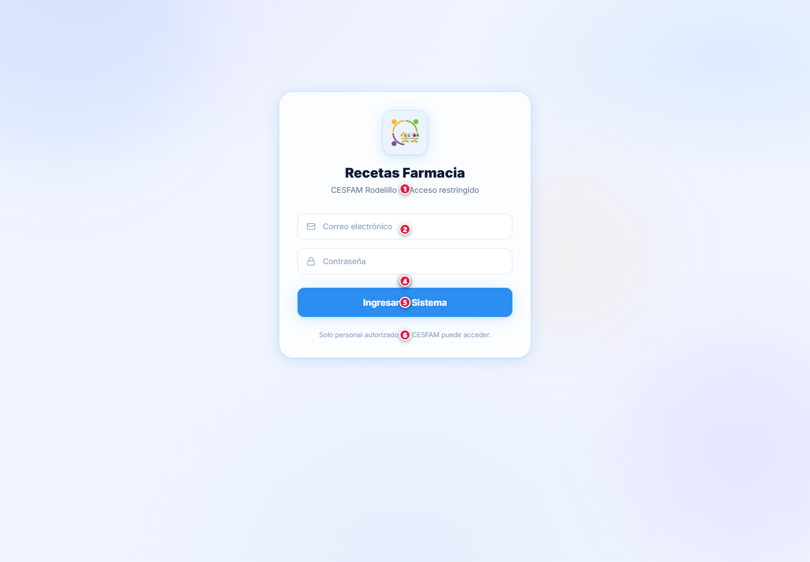
Pantalla de inicio de sesión. Aquí comienza todo: se ingresa el correo y la contraseña.
- 1 Logo del CESFAM.
- 2 Nombre del sistema y aviso de que es un acceso restringido.
- 3 Aquí se escribe el correo electrónico.
- 4 Aquí se escribe la contraseña.
- 5 Botón “Ingresar al Sistema”: se presiona para entrar.
- 6 Aviso: solo puede acceder personal autorizado.
Paso a pasoPara entrar
- Escriba su correo electrónico en el primer campo (número 3).
- Escriba su contraseña en el segundo campo (número 4).
- Presione el botón azul “Ingresar al Sistema” (número 5).
- En segundos verá el tablero principal con las pestañas de recetas.
ErrorSi dice “Credenciales incorrectas”
Mensaje de error de credenciales. Aparece cuando el correo o la contraseña no son correctos.
- 1 El sistema avisa: “Credenciales incorrectas. Verifica tu correo y contraseña.”
⚠️ ¿Qué hacer en ese caso?
Revise que el correo esté bien escrito (sin espacios ni mayúsculas de más) y vuelva a escribir la contraseña con cuidado.
Si el problema continúa, contacte al
encargado de informática o escriba a
difusionrodelillo@cmvalparaiso.cl
para revisar su acceso o restablecer su contraseña.
AvisoSi dice “Acceso Denegado”
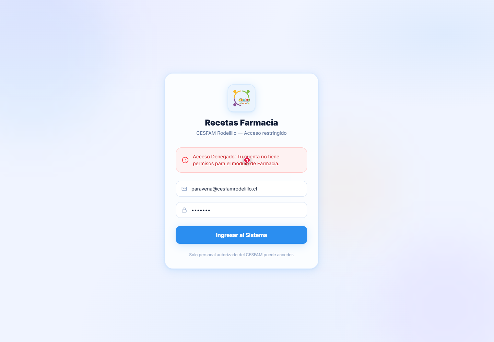
Aviso de acceso denegado. Su cuenta existe, pero no tiene permisos para este módulo.
- 1 Mensaje “Acceso Denegado”: la cuenta no tiene permisos para el módulo de Farmacia.
🔒 ¿Qué significa?
Significa que su correo y contraseña son correctos, pero su usuario aún no tiene habilitado el permiso de Farmacia.
Solicite la habilitación de su acceso al
encargado de informática o escriba a
difusionrodelillo@cmvalparaiso.cl.
3
La barra superior
Lo que ve en la parte de arriba, en todo momento
Después de ingresar, la franja de color de arriba se mantiene visible en todas las pantallas.
Desde ahí se reconoce quién está conectado y se accede a las herramientas principales.
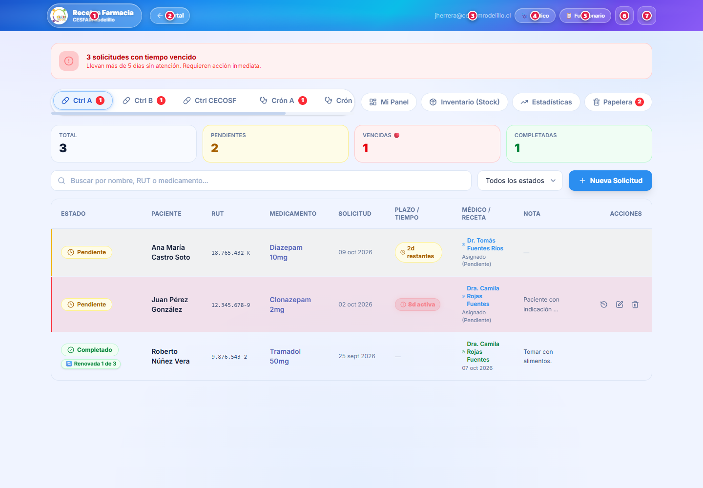
La barra superior. Es igual en todas las pantallas del sistema.
- 1 Logo y nombre del sistema. Al hacer clic se vuelve al tablero principal.
- 2 Botón “Portal”: abre el Portal de Funcionarios del CESFAM (página externa).
- 3 Correo de la sesión activa: confirma con qué cuenta está conectado.
- 4 Insignia 🩺 Médico: aparece si su usuario tiene permiso para autorizar/rechazar recetas.
- 5 Insignia 📋 Funcionario: aparece si su usuario puede ingresar recetas.
- 6 Rueda de Administración: entra a la configuración del sistema. Solo la ven los administradores.
- 7 Botón salir: cierra la sesión. Úselo siempre al terminar, sobre todo en computadores compartidos.
💡 Recuerde
Las insignias 🩺 y 📋 le muestran
qué permisos tiene su cuenta. Si cree que le falta alguno,
escríbale al
encargado de informática (
difusionrodelillo@cmvalparaiso.cl) para que lo revisen.
4
Las pestañas del tablero
Cada pestaña es una “carpeta” con un grupo de recetas
Debajo de la barra superior están las pestañas. Cada una contiene las recetas de un grupo distinto.
Para cambiar de grupo solo hay que hacer clic sobre la pestaña.
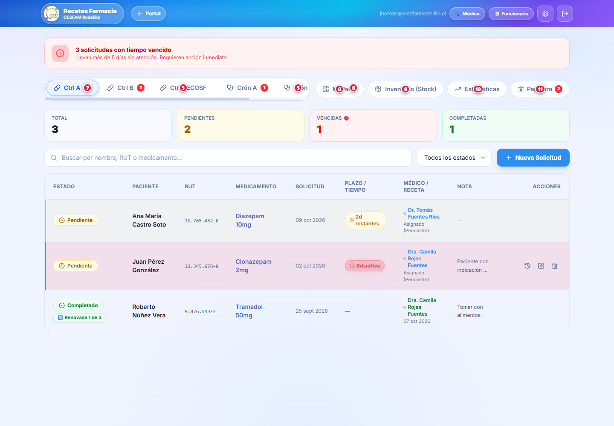
Pestañas del tablero (vista de un administrador, que las ve todas).
- 1 Ctrl A — recetas controladas del sector A.
- 2 Ctrl B — recetas controladas del sector B.
- 3 Ctrl CECOSF — recetas controladas del CECOSF.
- 4 Crón A — recetas crónicas del sector A.
- 5 Crón B — recetas crónicas del sector B.
- 6 Crón CECOSF — recetas crónicas del CECOSF.
- 7 Número rojo: cuántas recetas urgentes (vencidas) hay en esa pestaña.
- 8 Mi Panel — vista personal del médico (solo la ven los médicos).
- 9 Inventario (Stock) — stock de medicamentos. Solo administradores.
- 10 Estadísticas — resúmenes y ranking. Solo administradores.
- 11 Papelera — recetas eliminadas. Solo administradores.
Franja roja de alerta. Aparece arriba del tablero cuando hay solicitudes con tiempo vencido.
- 1 Aviso rojo: indica cuántas solicitudes llevan más días de los permitidos sin ser atendidas. Hay que atenderlas de inmediato.
✅ Orden de trabajo sugerido
Empiece siempre por las pestañas que muestran un número rojo: ahí están las recetas más urgentes.
5
La lista de recetas
Cómo leer el resumen, la barra de herramientas y la tabla
Al abrir una pestaña (por ejemplo Ctrl A) se ve: un resumen con números,
la barra de herramientas y la tabla con todas las recetas de ese grupo.
Resumen y barra de herramientas. Es lo primero que se ve en cada pestaña.
- 1 Total: cuántas recetas hay en esta pestaña.
- 2 Pendientes: recetas que aún esperan autorización.
- 3 Vencidas: pendientes que ya sobrepasaron su plazo (fondo rojo).
- 4 Completadas: recetas ya autorizadas.
- 5 Buscador: escriba un nombre, RUT o medicamento para encontrar una receta al instante.
- 6 Filtro por estado: muestra solo Pendientes, Completadas o Rechazadas.
- 7 Botón “Nueva Solicitud”: abre el formulario para ingresar una receta.
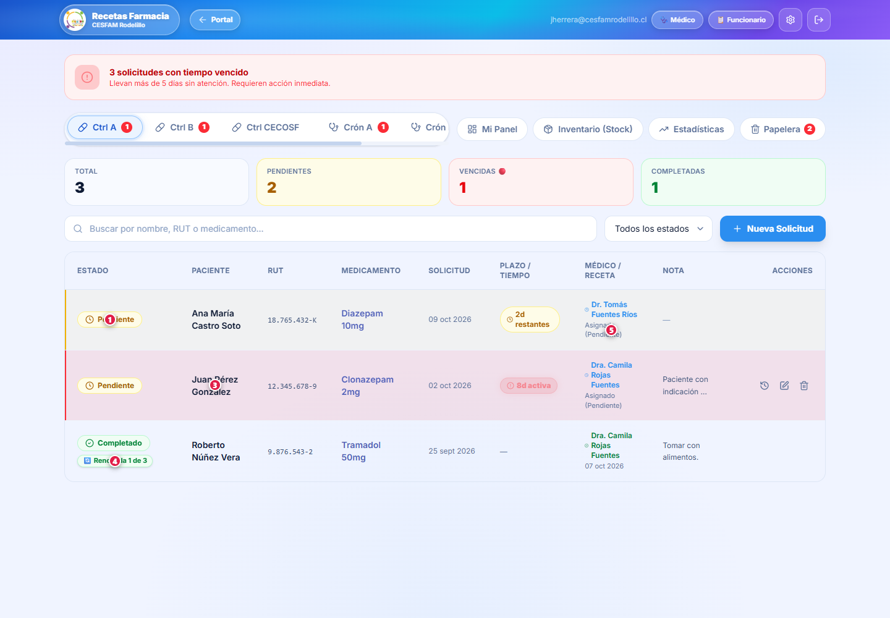
La tabla de recetas. Cada fila es la solicitud de un paciente; los colores indican urgencia.
- 1 Estado: Pendiente (amarillo), Completado (verde) o Rechazado (gris).
- 2 Plazo / Tiempo: “Vencida Xd” (rojo, pulsante), “Xd restantes” (amarillo o verde) o “Xd activa”.
- 3 Fila con fondo rojo: receta vencida; requiere acción inmediata.
- 4 Badge de renovación: “Renovada 1 de 3” indica cuántos meses de renovación automática lleva la receta.
- 5 Columna Médico / Receta: quién tiene asignada la receta o quién la autorizó y en qué fecha.
Las columnas de la tabla son: Estado, Paciente, RUT, Medicamento, Solicitud (fecha en que se pidió),
Plazo/Tiempo, Médico/Receta, Nota y Acciones. La columna Nota muestra instrucciones especiales que dejó quien ingresó la receta.
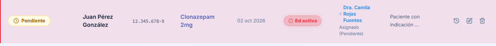
Botones de acción de una fila. Aparecen al pasar el mouse sobre la fila del paciente.
- 1 Reloj / historial (morado al pasar el mouse): abre el historial de auditoría de la receta.
- 2 Impresora (azul): solo en recetas completadas — abre el ticket para imprimir.
- 3 Lápiz: editar la solicitud (funcionarios/admin) o autorizar/rechazar (médicos).
- 4 Basurero (rojo al pasar el mouse): enviar la receta a la papelera. Solo administradores.
💡 Si no ve los botones
Los botones de cada fila se ocultan hasta que se pasa el mouse por encima de la fila. En pantallas táctiles, toque la fila.
6
Ingresar una nueva solicitud de receta
El formulario para registrar la receta de un paciente
Para registrar una receta se presiona el botón azul “Nueva Solicitud” (está sobre la tabla, a la derecha).
Se abre una ventana con el formulario. La receta quedará guardada en la pestaña en la que esté parado
(por ejemplo, si está en “Ctrl A”, se guardará como controlada del sector A).
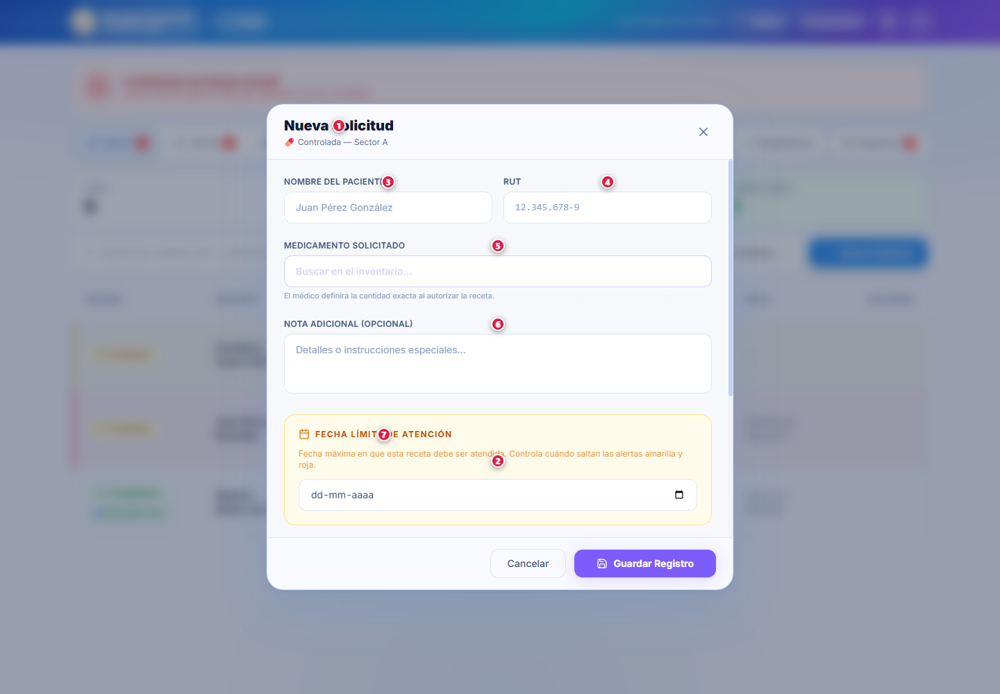
Formulario de nueva solicitud (parte superior). Datos del paciente, medicamento, nota y fecha límite.
- 1 Título de la ventana: confirma el tipo y sector donde se guardará (💊 Controlada / 📋 Crónica).
- 2 La X de la esquina cierra la ventana sin guardar.
- 3 Nombre del paciente (obligatorio).
- 4 RUT (obligatorio): se formatea solo, con puntos y guion, y se valida al guardar.
- 5 Medicamento solicitado: al escribir, el sistema sugiere los medicamentos del inventario.
- 6 Nota adicional (opcional): indicaciones especiales para el médico o la farmacia.
- 7 Fecha límite de atención: día máximo para atender esta receta (controla las alertas).
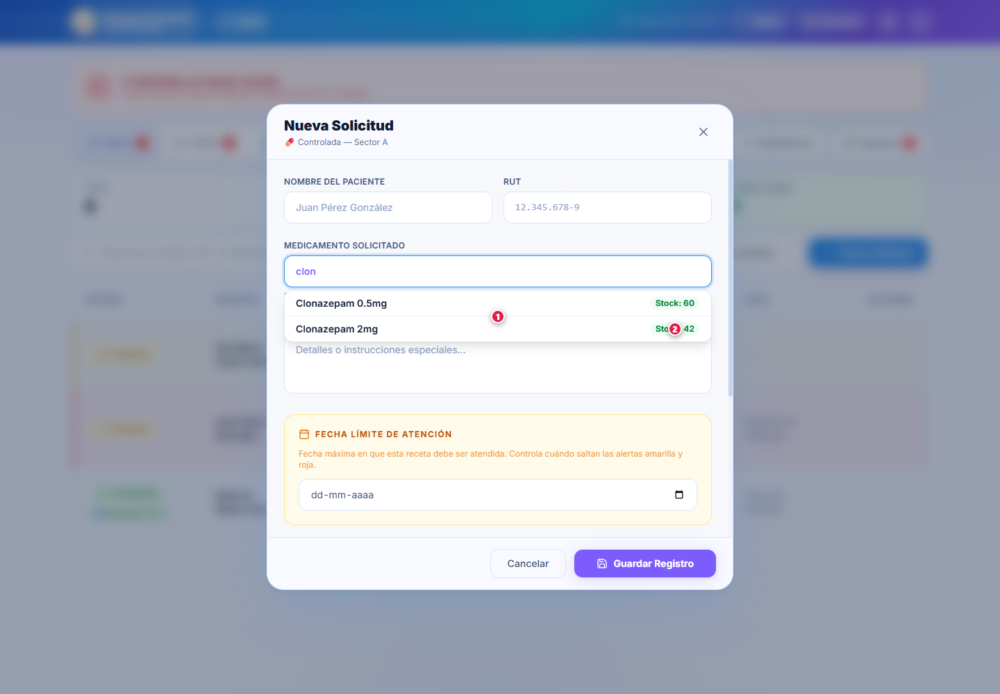
Buscador de medicamentos. Al escribir, aparece la lista del inventario con el stock disponible.
- 1 Lista de sugerencias: medicamentos del inventario que coinciden con lo escrito.
- 2 Stock de cada uno: verde = hay unidades; rojo = agotado. Se elige haciendo clic.
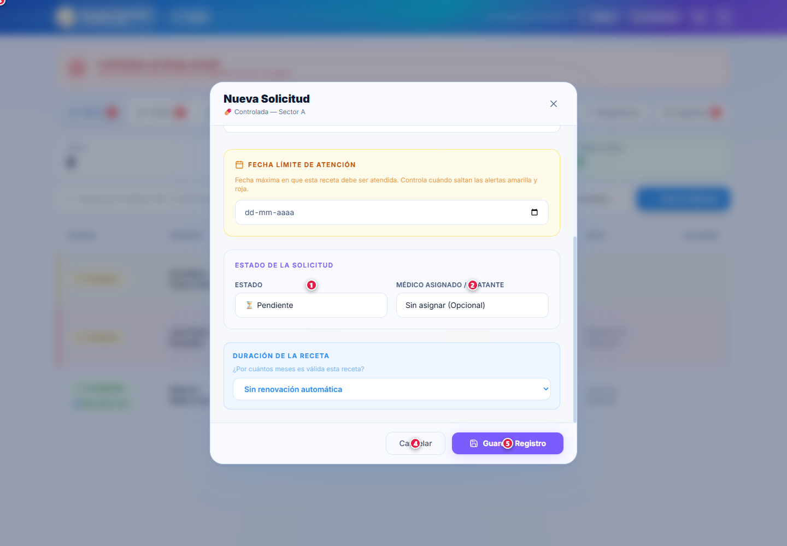
Formulario de nueva solicitud (parte inferior). Estado, médico asignado y duración de la receta.
- 1 Estado: por defecto queda Pendiente (el médico lo cambiará al autorizar).
- 2 Médico asignado / tratante: se puede dejar “Sin asignar” o elegir un médico de la lista.
- 3 Duración de la receta: meses de validez (1 a 6) para renovación automática, o “Sin renovación”.
- 4 Cancelar: cierra sin guardar.
- 5 Guardar Registro: guarda la solicitud y la deja visible para los médicos.
Paso a pasoPara ingresar una receta
- Ubíquese en la pestaña correcta (por ejemplo, Ctrl B si la receta controlada es del sector B).
- Presione “Nueva Solicitud”.
- Escriba el nombre del paciente y su RUT (se formatea solo).
- Empiece a escribir el medicamento y elíjalo de la lista con su stock.
- Si corresponde, escriba una nota (por ejemplo: “paciente retira los jueves”).
- Elija la fecha límite si la receta debe atenderse antes de cierto día.
- Opcional: asigne el médico tratante.
- Presione “Guardar Registro”. La receta aparecerá de inmediato en la tabla como Pendiente.
⚠️ Importante
El sistema valida el RUT. Si está mal escrito, aparecerá un aviso y no se guardará hasta corregirlo.
La cantidad exacta a despachar la define el médico al autorizar; por eso el formulario no la pide al ingresar.
7
El ticket de receta y su impresión
El comprobante que se entrega al paciente
Cuando una receta ya está completada (autorizada), el sistema genera un ticket
con todos los datos, listo para imprimir y entregar al paciente.
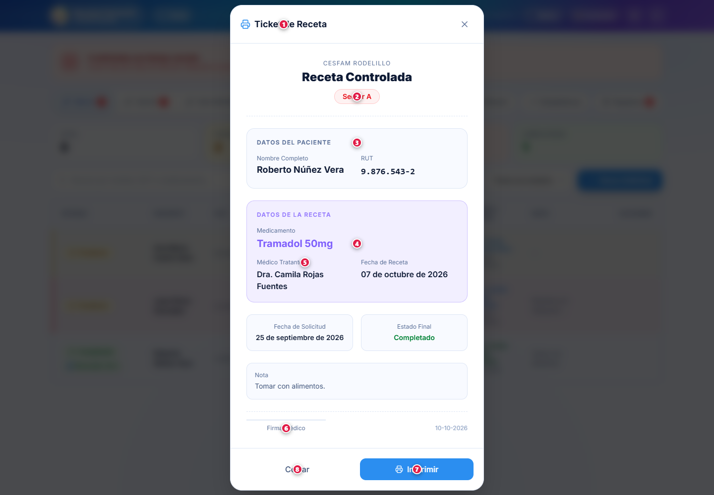
Ticket de receta. Se abre desde el botón de impresora de la fila del paciente.
- 1 Título: “Ticket de Receta”.
- 2 Tipo de receta (Controlada o Crónica) y su sector.
- 3 Datos del paciente: nombre completo y RUT.
- 4 Medicamento autorizado.
- 5 Médico tratante y fecha de la receta.
- 6 Espacio para la firma del médico.
- 7 Botón “Imprimir”: envía el ticket a la impresora.
- 8 Botón “Cerrar”: vuelve a la lista.
Paso a pasoPara imprimir un ticket
- Abra la pestaña donde está la receta ya completada.
- Pase el mouse sobre la fila del paciente y presione el botón de impresora (azul).
- Revise los datos del ticket.
- Presione “Imprimir” y elija la impresora.
💡 Consejo
El ticket solo está disponible para recetas completadas. Si la receta sigue pendiente o fue rechazada, no se puede imprimir.
8
El historial de auditoría de una receta
Quién hizo cada cambio y cuándo
Cada receta guarda un historial: quién la creó, quién la modificó y qué cambió en cada paso.
Es muy útil para aclarar dudas y para la trazabilidad de las recetas controladas.
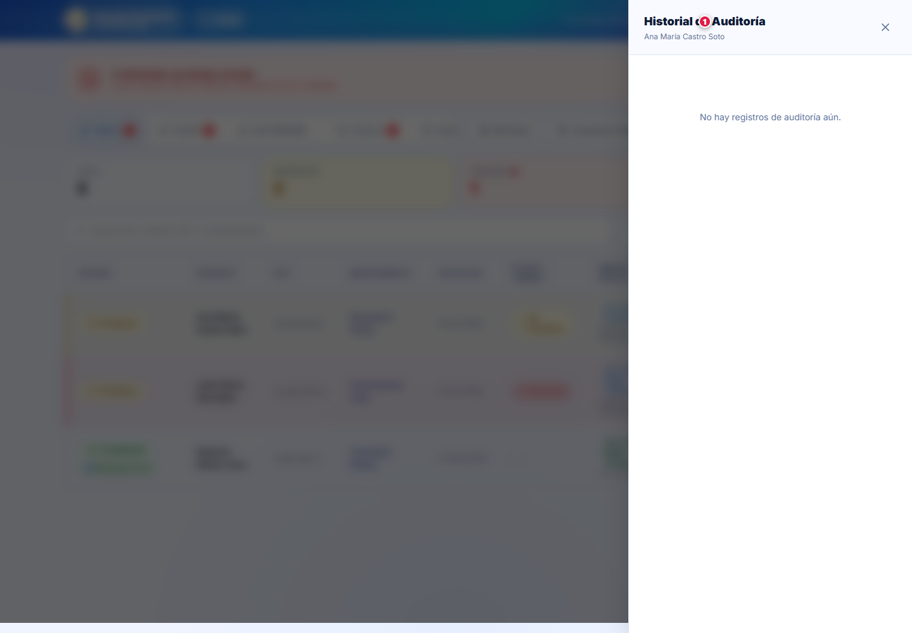
Historial de auditoría. Se abre con el botón de reloj de la fila del paciente.
- 1 Título del panel: “Historial de Auditoría”, con el nombre del paciente.
- 2 Línea de tiempo: los eventos ordenados del más reciente al más antiguo.
- 3 En cada evento se ve qué se hizo, quién lo hizo y cuándo.
- 4 Cuando hubo cambios, se muestra el valor anterior (rojo, tachado) y el nuevo (verde).
Los tipos de evento que pueden aparecer son: Creación, Modificación, Enviada a papelera, Restaurada y Eliminación definitiva, cada uno con su color propio.
9
La papelera de recetas
Eliminar con seguridad, restaurar si hubo un error
Si una receta está mal ingresada o duplicada, no se borra de inmediato: primero va a la
papelera, donde el administrador puede restaurarla o eliminarla definitivamente.
Solo los administradores tienen acceso a la papelera.
Enviar a papeleraDesde la fila de la receta
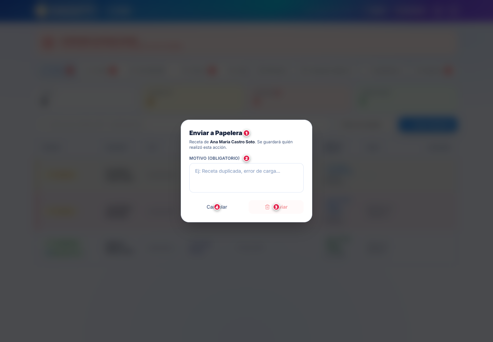
Ventana “Enviar a Papelera”. Pide un motivo antes de mover la receta a la papelera.
- 1 Aviso de a quién pertenece la receta y que quedará registro de quién la envía.
- 2 Motivo (obligatorio): escriba por qué se elimina (ej.: “receta duplicada”).
- 3 Botón “Enviar”: se activa recién cuando se escribe el motivo.
- 4 Botón “Cancelar”: cierra sin hacer cambios.
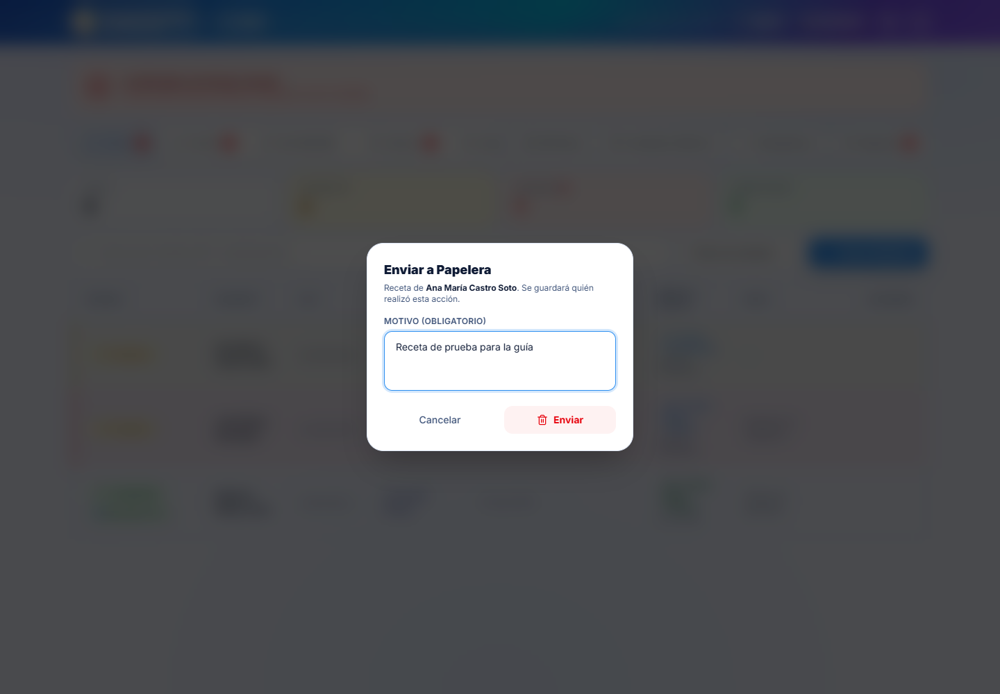
Con el motivo escrito, el botón “Enviar” queda disponible (en rojo).
Revisar la papeleraBotón Papelera del tablero
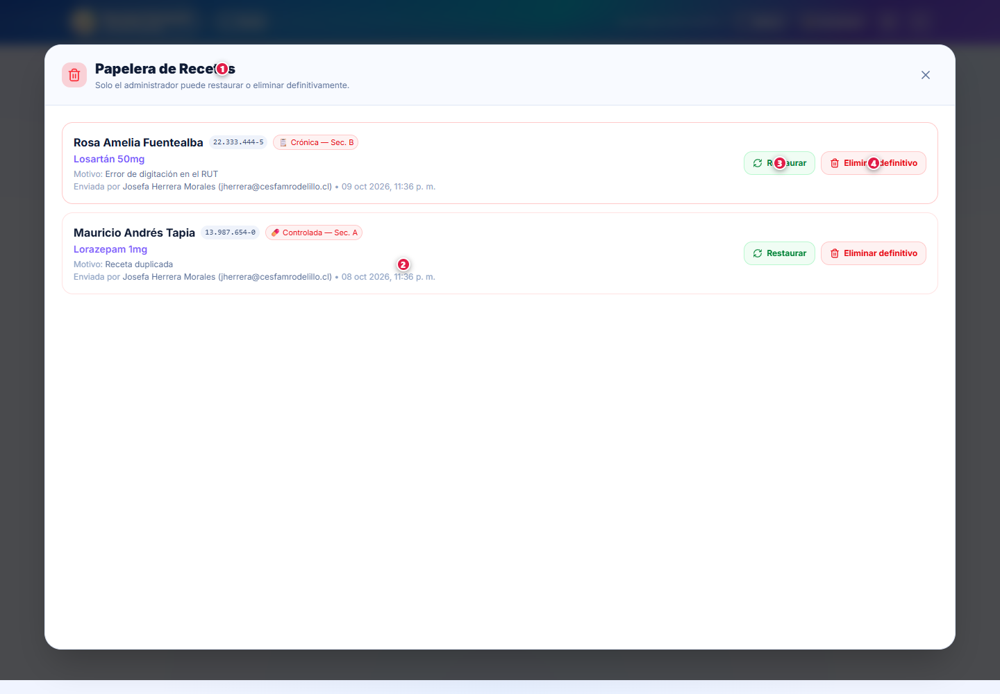
Papelera de recetas. Lista todo lo eliminado, con su motivo y quién lo envió.
- 1 Título y aviso: solo el administrador puede restaurar o eliminar definitivamente.
- 2 Cada tarjeta muestra el paciente, el medicamento, el motivo, quién la envió y cuándo.
- 3 Botón “Restaurar” (verde): devuelve la receta a su lista original, como si nada hubiera pasado.
- 4 Botón “Eliminar definitivo” (rojo): borra la receta para siempre.
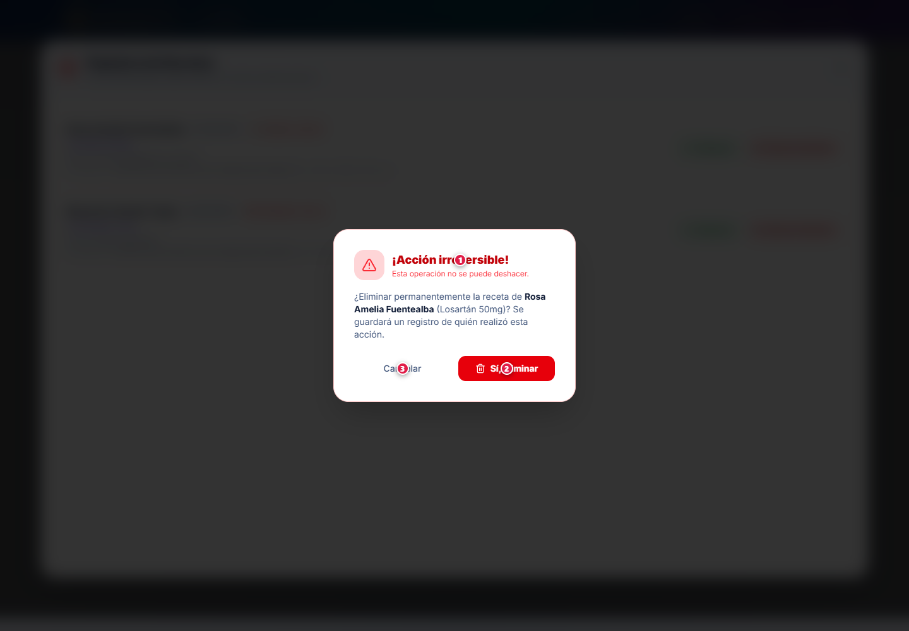
Confirmación de eliminación definitiva. El sistema pide confirmar porque no se puede deshacer.
- 1 Aviso “¡Acción irreversible!”: esta operación no se puede deshacer.
- 2 Botón “Sí, eliminar”: borra definitivamente (queda registrado quién lo hizo).
- 3 Botón “Cancelar”: se arrepintió — la receta sigue en la papelera.
🔒 Regla de oro
Antes de “Eliminar definitivo”, revise bien la tarjeta. Prefiera “Restaurar” si la receta era correcta.
10
Mi Panel: el trabajo diario del médico
Autorizar y rechazar recetas en un solo lugar
Al ingresar con una cuenta de médico, el sistema abre directamente “Mi Panel”:
un resumen personal con todas las recetas que le corresponden y las que están esperando médico.
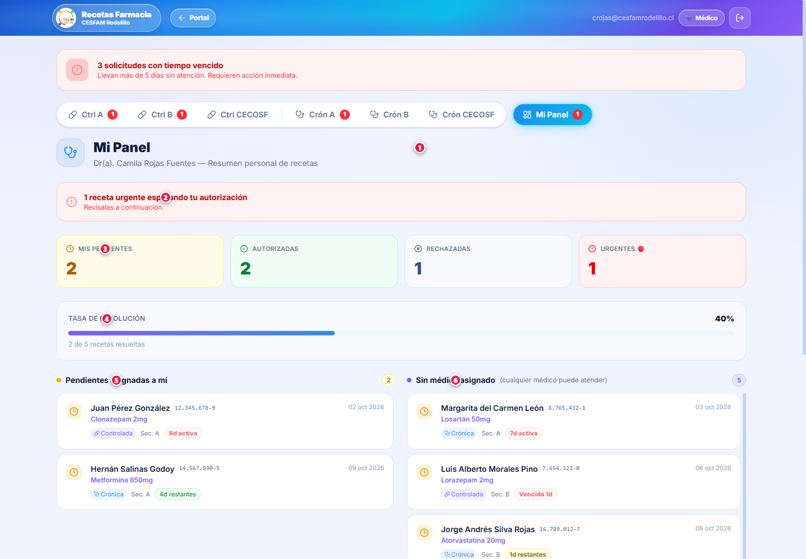
Mi Panel. El resumen personal del médico: pendientes, autorizadas, rechazadas y urgentes.
- 1 Título “Mi Panel” con su nombre.
- 2 Aviso rojo de urgentes: recetas vencidas que esperan su autorización.
- 3 Tarjetas con sus números: Mis Pendientes, Autorizadas, Rechazadas y Urgentes.
- 4 Tasa de resolución: porcentaje de sus recetas ya resueltas.
- 5 “Pendientes asignadas a mí”: recetas con su nombre. Haga clic en una tarjeta para atenderla.
- 6 “Sin médico asignado”: recetas que cualquier médico puede atender.
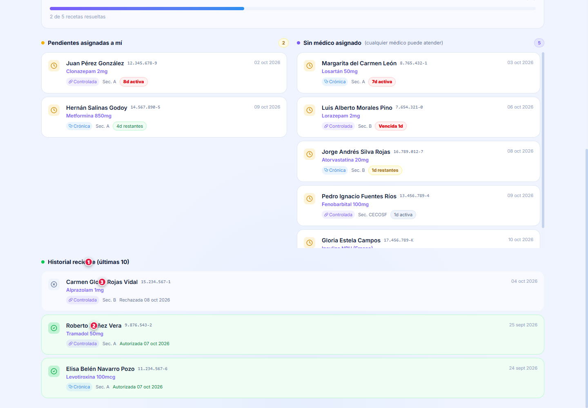
Historial reciente. Más abajo se ven las últimas recetas que el médico autorizó o rechazó.
- 1 Historial reciente (últimas 10 decisiones del médico).
- 2 Tarjeta verde = receta autorizada (completada).
- 3 Tarjeta gris = receta rechazada.
Autorizar o rechazarLa ventana de decisión médica
Al hacer clic en una tarjeta de receta pendiente se abre la ventana “Autorizar / Rechazar Receta”.
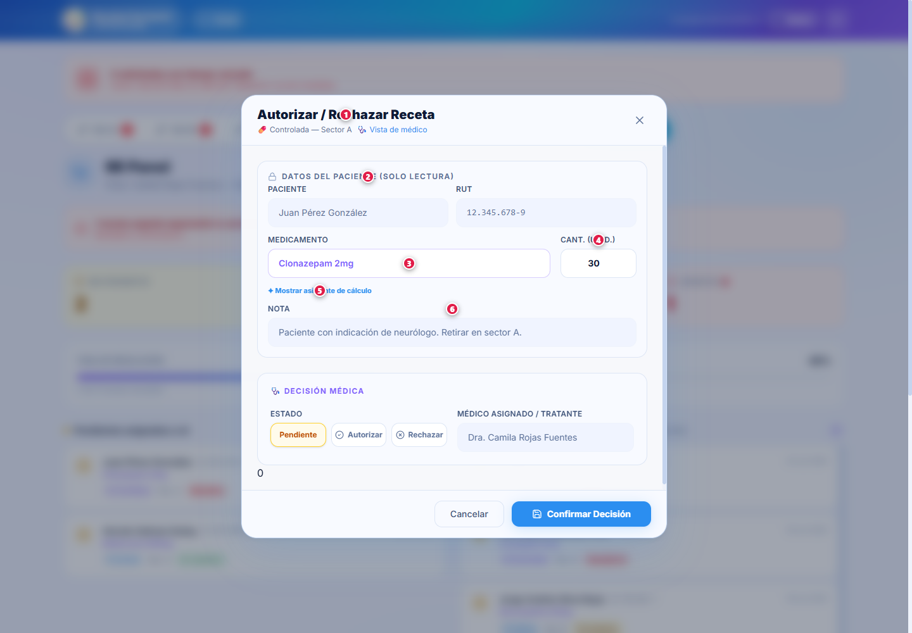
Ventana de decisión médica. Los datos del paciente son de solo lectura; el médico decide el tratamiento.
- 1 Título “Autorizar / Rechazar Receta” con el tipo y sector.
- 2 Datos del paciente (solo lectura): el médico no puede modificarlos.
- 3 Medicamento: el médico lo elige del inventario (con su stock).
- 4 Cantidad de unidades a despachar al paciente.
- 5 Asistente de cálculo: calcula la cantidad por dosis, horas y días.
- 6 Nota dejada por el funcionario (solo lectura).
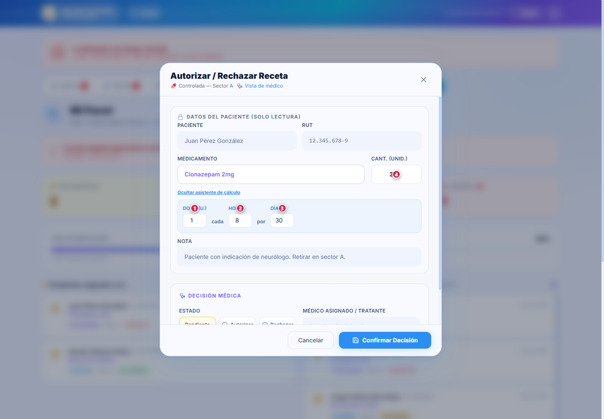
Asistente de cálculo. Al abrirlo, calcula automáticamente la cantidad total a despachar.
- 1 Dosis por toma (ej.: 1 comprimido).
- 2 Cada cuántas horas (ej.: cada 8 horas).
- 3 Por cuántos días (ej.: 30 días).
- 4 El sistema llena solo la cantidad total. Ejemplo: 1 cada 8 horas × 30 días = 90 unidades.
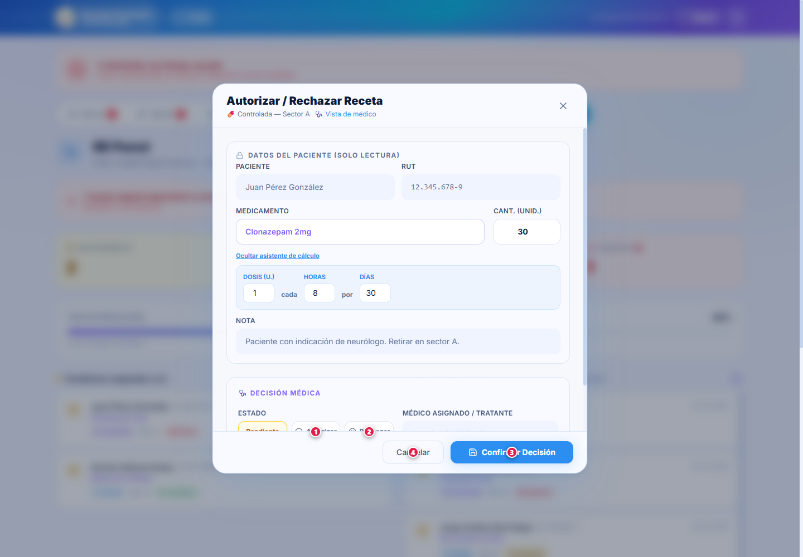
La decisión médica. Tres opciones: mantener Pendiente, Autorizar o Rechazar.
- 1 Botones Pendiente / Autorizar / Rechazar: elija uno.
- 2 “Rechazar” en rojo: la receta no se entrega (pedirá un motivo).
- 3 “Confirmar Decisión”: guarda su decisión.
- 4 “Cancelar”: sale sin guardar.
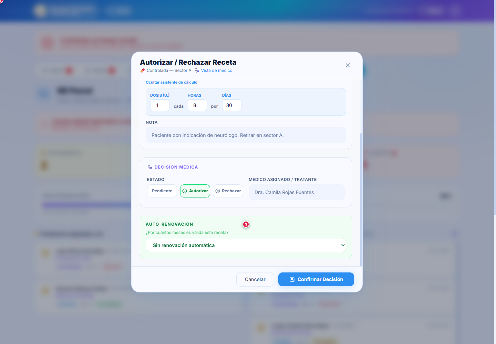
Al elegir “Autorizar” aparece la opción de auto-renovación: meses de validez de la receta.
- 1 Sección “Auto-Renovación”: cuántos meses durará la receta.
- 2 Selector de 1 a 6 meses. Con renovación, el stock se descuenta mes a mes automáticamente.
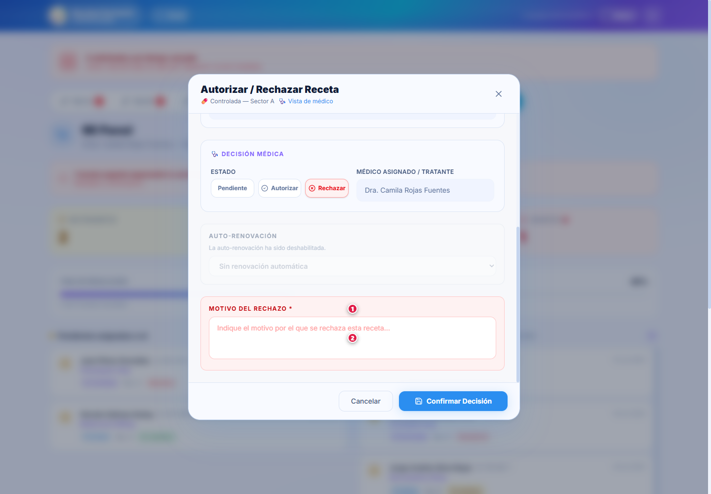
Al elegir “Rechazar” el sistema exige escribir el motivo del rechazo.
- 1 Campo “Motivo del Rechazo” (obligatorio): quedará visible para el funcionario y en el historial.
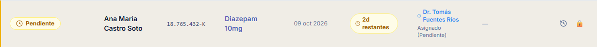
Candado en la lista. Si un médico mira la lista general, las recetas asignadas a otro médico muestran un candado 🔒: solo el médico asignado puede autorizarlas.
Paso a pasoAutorizar una receta
- Abra “Mi Panel” y revise la alerta de urgentes.
- Haga clic en la tarjeta de la receta a atender (sección “Pendientes asignadas a mí” o “Sin médico asignado”).
- Elija el medicamento del inventario y la cantidad (use el asistente de cálculo si lo necesita).
- Presione “Autorizar” y, si corresponde, elija los meses de renovación.
- Presione “Confirmar Decisión”. La receta pasa a “Completada” y el stock se descuenta solo.
Paso a pasoRechazar una receta
- Abra la receta pendiente desde su panel.
- Presione “Rechazar”.
- Escriba el motivo del rechazo (obligatorio).
- Presione “Confirmar Decisión”. El funcionario verá el motivo y podrá corregir la solicitud.
✅ Tranquilidad con el stock
Si rechaza una receta que ya había descontado stock, el sistema devuelve las unidades automáticamente al inventario.
11
Inventario y stock (administración)
El stock maestro de medicamentos
La pestaña “Inventario (Stock)” muestra todos los medicamentos disponibles y sus unidades.
El stock se descuenta solo cada vez que un médico autoriza una receta. Solo la ven los administradores.
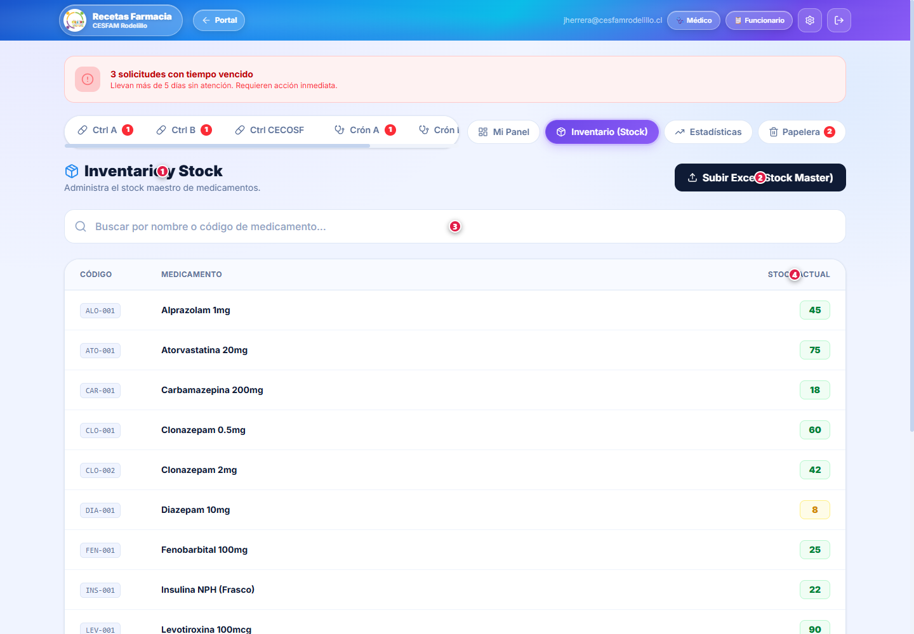
Inventario y stock. Tabla con código, medicamento y unidades disponibles.
- 1 Título de la sección.
- 2 “Subir Excel (Stock Master)”: actualiza todo el stock desde la planilla oficial.
- 3 Buscador: filtrar por nombre o código de medicamento.
- 4 Tabla con código, medicamento y stock actual.
- 5 Colores del stock: verde = suficiente · amarillo = bajo (10 o menos) · rojo = agotado (0).
- 6 Total de ítems cargados en el sistema.
Actualizar el stockSubir la planilla Excel
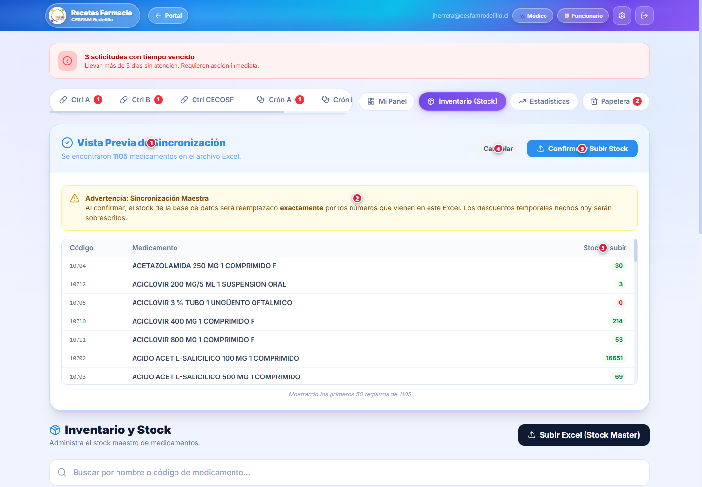
Vista previa al subir el Excel. El sistema muestra qué va a cargar antes de tocar nada.
- 1 Vista previa: cuántos medicamentos encontró en el archivo.
- 2 Advertencia importante: el stock del sistema será reemplazado exactamente por los números del Excel.
- 3 Tabla de vista previa: código, medicamento y stock que se subirá.
- 4 Cancelar: no se cambia nada.
- 5 “Confirmar y Subir Stock”: aplica el Excel al inventario.
Paso a pasoSubir el Excel de stock
- Abra la pestaña “Inventario (Stock)”.
- Presione “Subir Excel (Stock Master)” y elija el archivo .xlsx, .xls o .csv.
- Revise la vista previa: verifique que el número de medicamentos sea el esperado.
- Si está correcto, presione “Confirmar y Subir Stock”.
- Aparecerá el aviso “Inventario sincronizado exitosamente”.
⚠️ Cuidado
Al confirmar, el Excel reemplaza el stock actual (incluidos los descuentos del día).
Conviene subir la planilla oficial al inicio de la jornada o cuando la farmacia indique.
12
Estadísticas generales (administración)
La foto completa de la farmacia
La pestaña “Estadísticas” resume toda la actividad: cuántas recetas hay, cómo van los médicos
y cuáles son los medicamentos más entregados. Solo la ven los administradores.
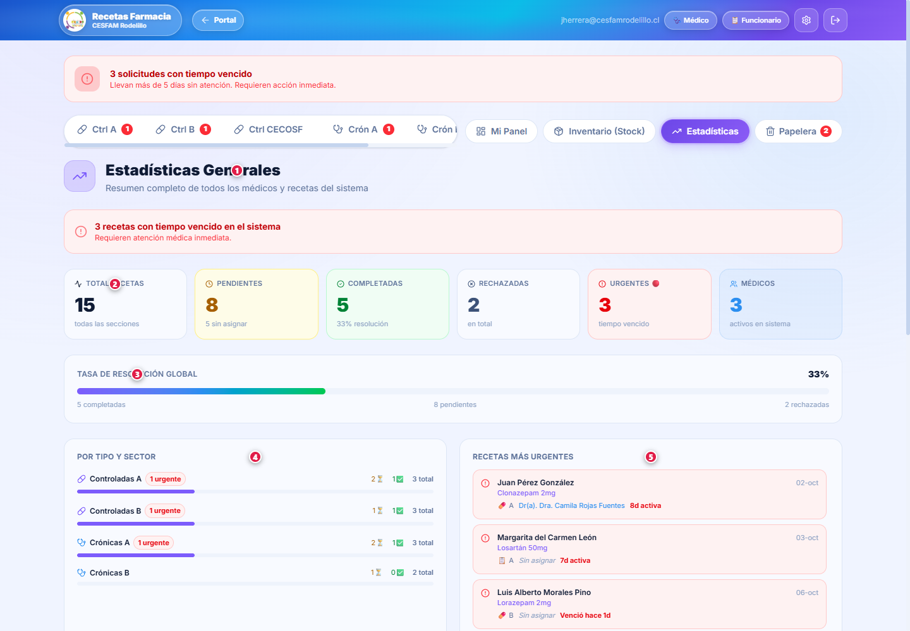
Estadísticas (parte superior). Totales, tasa de resolución y resumen por sector.
- 1 Título de la sección.
- 2 Tarjetas resumen: total de recetas, pendientes, completadas, rechazadas, urgentes y médicos activos.
- 3 Tasa de resolución global: porcentaje de recetas ya completadas.
- 4 Por tipo y sector: barra de avance de cada grupo (Controladas/Crónicas × A/B).
- 5 Recetas más urgentes: las vencidas, ordenadas por gravedad.
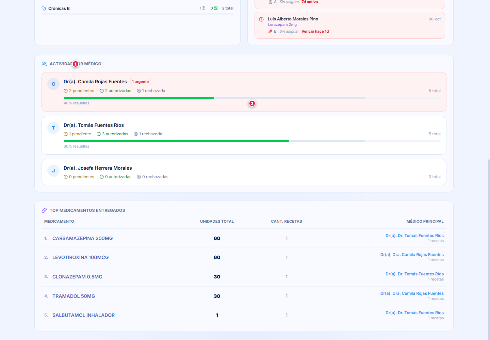
Actividad por médico. Pendientes, autorizadas y rechazadas de cada doctor, con su avance.
- 1 Panel “Actividad por médico”: los doctores con urgentes aparecen con fondo rojo.
- 2 Barra de progreso de cada médico y su % de recetas resueltas.
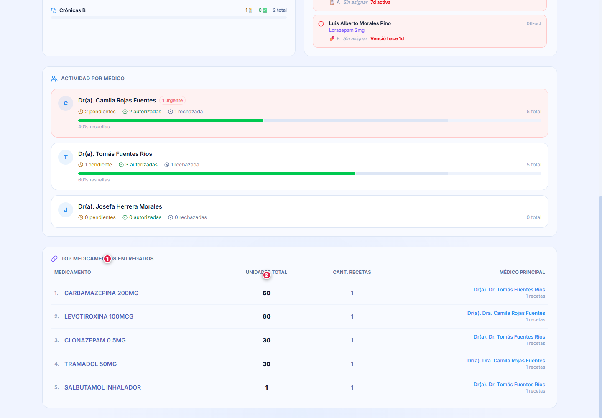
Top de medicamentos entregados. Útil para planificar compras y reposición.
- 1 Ranking “Top Medicamentos Entregados”.
- 2 Unidades totales y cantidad de recetas por medicamento, con el médico que más lo receta.
13
Administración: alertas, usuarios y permisos
La configuración del sistema (solo administradores)
La rueda de Administración (barra superior) abre la página de configuración. Desde aquí el
administrador ajusta los tiempos de alerta, gestiona los permisos de cada usuario y accede a la papelera.
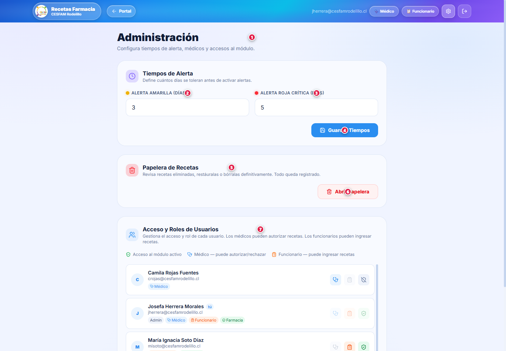
Administración (parte superior). Tiempos de alerta y acceso a la papelera.
- 1 Título de la página: “Administración”.
- 2 Alerta amarilla (días): a partir de cuántos días una receta empieza a marcarse en amarillo.
- 3 Alerta roja crítica (días): a partir de cuántos días se considera vencida.
- 4 Botón “Guardar Tiempos”: aplica los valores.
- 5 Sección Papelera: acceso directo a las recetas eliminadas.
- 6 Botón “Abrir Papelera”.
- 7 Sección “Acceso y Roles de Usuarios”: la lista de todo el personal.
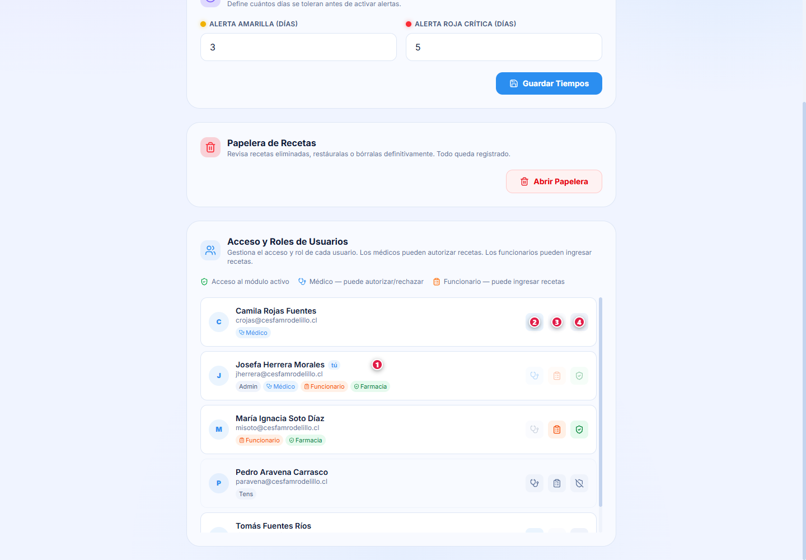
Usuarios y permisos. Con tres botones por persona: Médico, Funcionario y acceso a Farmacia.
- 1 Cada usuario con su nombre, correo e insignias de permisos activos.
- 2 Botón estetoscopio: activa o quita el permiso de Médico (autorizar/rechazar).
- 3 Botón tabla: activa o quita el permiso de Funcionario (ingresar recetas).
- 4 Botón escudo: da o retira el acceso general al módulo de Farmacia.
💡 Cómo se usan
Médico → la persona ve “Mi Panel” y puede autorizar/rechazar. Funcionario → puede ingresar y editar recetas.
Farmacia (escudo) → puede entrar al módulo. Un administrador puede tener varios permisos a la vez; los cambios se aplican al instante y la persona verá el efecto al volver a entrar.
14
La vista del funcionario
Ingresar recetas de forma simple y segura
El funcionario ve las mismas pestañas de recetas (Ctrl A/B/CECOSF y Crón A/B/CECOSF), pero
no ve Mi Panel, Inventario, Estadísticas ni Papelera. Su trabajo es ingresar y mantener las solicitudes.
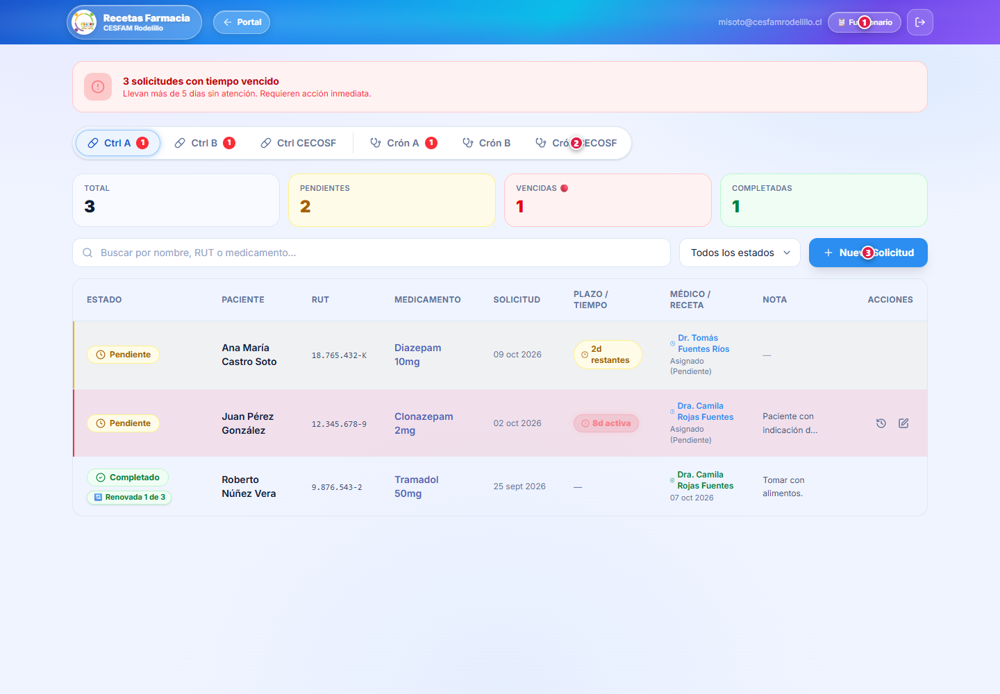
Tablero del funcionario. Pestañas de recetas, buscador y botón Nueva Solicitud.
- 1 Insignia 📋 Funcionario en la barra superior (confirma su rol).
- 2 Solo las pestañas de recetas (sin Inventario ni Estadísticas).
- 3 Botón “Nueva Solicitud” para ingresar recetas.
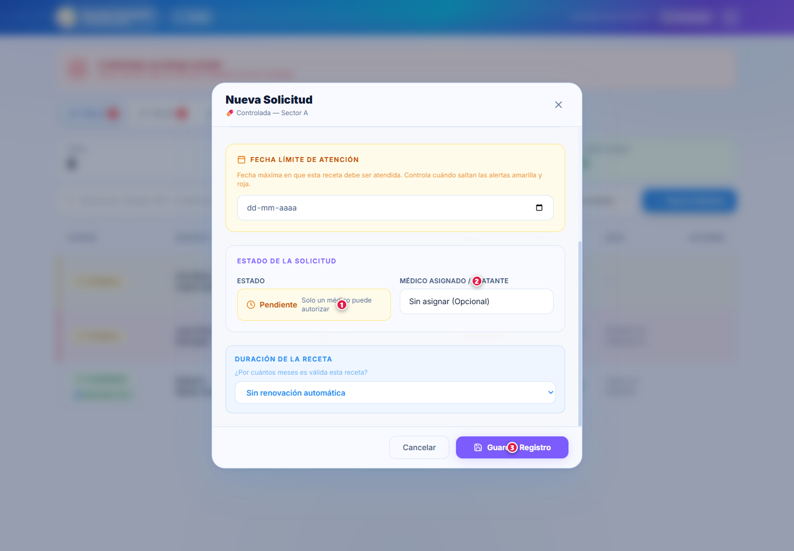
Formulario del funcionario (parte inferior). El estado queda fijo en Pendiente.
- 1 El estado queda fijo en “Pendiente”: “Solo un médico puede autorizar”. El funcionario no puede completar ni rechazar.
- 2 El funcionario puede asignar el médico tratante.
- 3 “Guardar Registro” deja la solicitud visible para los médicos.
✅ Flujo correcto
Funcionario ingresa la solicitud → queda Pendiente → el médico la autoriza (elige medicamento y cantidad)
→ la farmacia entrega e imprime el ticket. Así se mantiene la separación de responsabilidades.
15
Resumen: qué puede hacer cada rol
Tabla rápida de permisos
| Función |
🩺 Médico |
📋 Funcionario |
🧪 Admin / Químico F. |
| Ver las listas de recetas (Ctrl/Crón por sector) | ✔ Sí | ✔ Sí | ✔ Sí |
| Buscar y filtrar recetas | ✔ Sí | ✔ Sí | ✔ Sí |
| Ingresar nuevas solicitudes | ✔ Sí | ✔ Sí | ✔ Sí |
| Editar datos de una solicitud | ✘ No | ✔ Sí | ✔ Sí |
| Autorizar / rechazar recetas | ✔ Sí (solo las asignadas a él o sin asignar) | ✘ No | ✔ Sí |
| Ver “Mi Panel” personal | ✔ Sí | ✘ No | ◐ Si tiene permiso médico |
| Imprimir tickets | ✔ Sí | ✔ Sí | ✔ Sí |
| Ver historial de auditoría | ✔ Sí | ✔ Sí | ✔ Sí |
| Enviar recetas a la papelera | ✘ No | ✘ No | ✔ Sí |
| Restaurar / eliminar definitivo | ✘ No | ✘ No | ✔ Sí |
| Ver Inventario (Stock) | ✘ No | ✘ No | ✔ Sí |
| Subir el Excel de stock | ✘ No | ✘ No | ✔ Sí |
| Ver Estadísticas | ✘ No | ✘ No | ✔ Sí |
| Administrar usuarios y permisos | ✘ No | ✘ No | ✔ Sí |
| Configurar tiempos de alerta | ✘ No | ✘ No | ✔ Sí |
💡 Un usuario puede tener varios permisos
Por ejemplo, un químico farmacéutico puede tener además el permiso 🩺 Médico y el 📋 Funcionario
activados, y entonces verá todas las secciones a la vez (como en las capturas de administración de esta guía).
16
Preguntas frecuentes y problemas comunes
Soluciones rápidas a lo más habitual
No recuerdo mi contraseña o no me deja entrar.
El sistema no cambia contraseñas por sí solo. Contacte al
encargado de informática o escriba a
difusionrodelillo@cmvalparaiso.cl para gestionar las cuentas de acceso.
Me aparece “Acceso Denegado” aunque mi clave es correcta.
Su cuenta existe, pero no tiene el permiso de Farmacia activado. Solicítelo al
encargado de informática
o escriba a
difusionrodelillo@cmvalparaiso.cl: la habilitación se realiza en
Administración → Acceso y Roles de Usuarios (botón de escudo).
Soy médico y no veo la pestaña “Mi Panel”.
“Mi Panel” solo aparece cuando la cuenta tiene el permiso de
Médico activado (insignia 🩺 en la barra superior).
Si no la ve, solicítelo al
encargado de informática (
difusionrodelillo@cmvalparaiso.cl)
para que activen el permiso de Médico en su usuario.
No encuentro una receta que ingresé.
Revise que esté mirando la pestaña correcta (Ctrl vs. Crón y el sector A/B/CECOSF). También pruebe el buscador por nombre, RUT o medicamento, y revise que el filtro de estado esté en “Todos los estados”.
La receta desapareció de la lista.
Probablemente fue enviada a la
papelera. Solicite su revisión al
encargado de informática
o escriba a
difusionrodelillo@cmvalparaiso.cl para que la restauren si corresponde.
¿Qué significa la franja roja de “solicitudes con tiempo vencido”?
Que hay recetas pendientes que sobrepasaron su plazo (o los días máximos configurados). Deben atenderse de inmediato: aparecen en rojo en la tabla y con contador en las pestañas.
¿Cuándo puedo imprimir el ticket?
Solo cuando la receta está completada. Pase el mouse sobre la fila y use el botón de impresora.
Rechacé una receta por error, ¿se perdió el stock?
No. Si la receta ya había descontado stock, el sistema devuelve las unidades automáticamente al rechazar. Además, el administrador puede volver a editarla para dejarla pendiente.
El stock de un medicamento aparece en rojo o amarillo, ¿qué hago?
Rojo = agotado (0 unidades); amarillo = bajo (10 o menos). Avise al administrador para reponer o actualizar la planilla de stock.
¿Quién puede ver los datos de los pacientes?
Solo el personal con acceso al módulo. Los datos sensibles (nombre y RUT) se guardan cifrados, y todos los cambios quedan registrados en el historial de auditoría de cada receta.
Quiero saber quién modificó una receta.
Pase el mouse sobre la fila y abra el historial (botón de reloj). Ahí se ve cada creación, cambio y envío a papelera, con nombre, correo, fecha y hora.
¿Debo cerrar la sesión al terminar?
Sí, especialmente en computadores compartidos. Use el botón de salir de la barra superior (último icono a la derecha).
17
Un día típico de trabajo, paso a paso
El circuito completo de una receta
MañanaRevisión y prioridades
- Funcionarios: ingresan al sistema y revisan la franja roja y las pestañas con contador rojo (recetas vencidas).
- Funcionarios: registran las nuevas recetas de los pacientes con el botón “Nueva Solicitud”, en la pestaña de su sector.
- Administrador: revisa el inventario y, si corresponde, sube la planilla Excel de stock actualizada.
Durante el díaAtención de recetas
- Médicos: abren “Mi Panel”, atienden primero las urgentes (rojas) y luego el resto de las pendientes.
- Al autorizar, el médico elige el medicamento del inventario, la cantidad y los meses de renovación si corresponde. El stock se descuenta solo.
- Si una receta no corresponde, el médico la rechaza con su motivo, que queda visible para el funcionario.
- Farmacia/funcionarios: buscan la receta completada, abren el ticket e imprimen para entregar al paciente.
CierreControl y limpieza
- Administrador: revisa las estadísticas (pendientes por médico, urgentes, top de medicamentos).
- Revisa la papelera: restaura lo que se eliminó por error y confirma las eliminaciones definitivas pendientes.
- Todos cierran sesión con el botón de salir.
🎯 La idea en una frase
El funcionario ingresa, el médico autoriza, la farmacia entrega — y el sistema cuida los tiempos,
el stock y el registro de cada paso.
¡Eso es todo!
Con esta guía ya conoce cada pantalla y cada botón del sistema de Recetas de Farmacia.
Ante cualquier duda o problema, contacte al encargado de informática o escriba a
difusionrodelillo@cmvalparaiso.cl.
Las imágenes de este manual son capturas reales del sistema con datos de ejemplo.